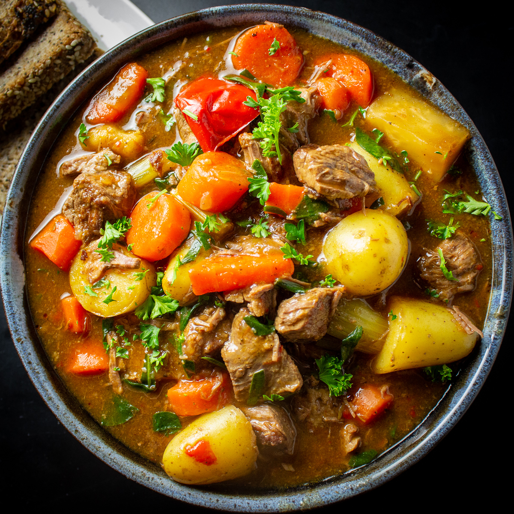

Beef Stew

Description
Beef Stew is a hearty mixture of solid foods and liquids, usually a gravy base or soup. The beef is stewed with carrots, potato, and sometimes celery and/or onion.
Ingredients
- Stewing Beef
- Carrots
- Onions
- POtatoes
- Broth
Steps
- Brown meat in oil
- Remove meat and saute veg
- Return meat to the pot
- Add broth
- Allow to cook at a low temperature until ingredients are tender